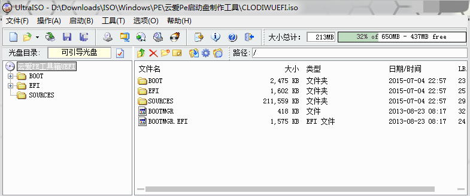

ud+mbr以及uefi的特点，做成了MBR+UEFI的双模式引导的隐藏分区启动盘。
很久没有使用过云爱PE工具箱，现其官网似乎已经更换，是否是同一团队维护也未可知。
简便方法
一开始我也没怎么接触过UEFI的启动盘制作，所以也无从下手，只能求助于网上现有的工具。所幸，搜到了神器“云爱Pe工具箱”。 其网站上的介绍如下：
这是一款自我革命的产品
本产品承诺永久免费。虽然市面上已经有好些Pe工具，但无论是国内的其它Pe工具，都是设置强制设置主页，带恶意软件，强制安装推广软件等。虽然有些Pe工具有选择取消强制设置，但是选择按钮都是隐藏或要输入密码才能取消，这些都是我们无法接受的，同时也有些网站在自己的Pe中加入了更多的广告伤害了用户，影响了用户体验，这是我们不想看到的。我们的这款产品，只要还有用户需要，我们会一直维护下去。我们的口号，坚决做纯净WinPe，让我们用上干净好看WinPe工具箱。
云爱WinPe工具箱是极适合于网管、装机人员使用的多功能WinPE系统维护工具箱，它基于Windows PE制作，支持USB2.0/3.0/SCSI/Netcard等设备，操作简便，界面清爽。您可使用它进行磁盘分区、格式化、磁盘克隆、修改密码、数据恢复、系统安装等系列日常应急维护工作。相比同性质的DOS系统维护工具，PE工具箱更容易操作、更容易上手。那么今天给您带来一款轻量级的纯Win8PE微型维护系统，由云爱基于Windows PE精简美化，用来制作U盘启动盘等，或许是不错的选择！
– 云爱Pe工具箱全体成员 2015年03月01日
软件界面
初始化检测，可能会有部分组件被杀毒软件报毒，但是我觉得是误报吧。如果不放心，可以在看懂原理后手动制作MBR+UEFI双模式引导的隐藏分区启动盘。可以参照下一大节DIY启动盘的内容。

主界面，点击高级选项会出现如下图这样的高级选项。建议备份好u盘原来的文件，保留软件默认参数，选则好正确的u盘，然后点击“全新制作”。
**注意：***储存分区的文件系统格式默认设置是NTFS，会折腾的童鞋也许会在启动选项中加入linux的发行版。很多linux的发行版默认没有集成NTFS驱动，所以这里最好是改成Fat32。当然，改成Fat32也会有问题随之而来，即不支持单个大小超过4GB的文件。
当然，一开始格成了NTFS的文件系统也没关系，后期重新格式化成Fat32也可以，但是注意不要调整磁盘容量——启动文件在储存分区以外的磁盘空间。因此这种方式制作的启动盘是能够防病毒的。*

纯净，美观，傻瓜式操作。目测是个非常好的软件，然而却很毒舌，(>_<)
操作完成 电脑修得好，备胎当到老。

点击“模拟测试U盘”下面的选项，就可以测试启动盘啦。
DIY启动盘
在Diskgenius中查看已经用“云爱WinPe工具箱”制作了启动盘的U盘，会发现其分区状态如下：

第一部分是容量为512M的UD分区，MBR模式，可以用Fbinsttool编辑这一分区。 第二部分是容量为27.8G的储存分区，日常存储用的。 第三部分是容量为512M的UEFI启动分区，卷标
EFI。
又在Diskgenius中查看了EFI分区中的文件，发现这些文件就是PE UEFI版本的启动镜像解压出来的文件。


经过网上查询，UEFI模式应该是从磁盘上Fat文件系统，且卷标为EFI的磁盘数据引导的。也就是说UEFI的引导数据都放在这个分区。UEFI引导我还不是很清楚，这句总结也许不对。高手且一笑而过，菜鸟也大可不放在心上，照着下面的步骤来就行了。
至此，大概是有了思路了。但是还不敢确定，直到我在百度上搜到纯手工制作UEFI/Legacy BIOS双启动U盘这篇教程。它验证了我的想法，于是我大体按照它的步骤，果然成功了。当然，这个教程用到了一个叫做“青菜U盘启动盘制作工具”的软件，结果只是做了一个ud+mbr的启动项。与其下载这个青菜U盘，倒不如直接下载云爱的这个工具算了，一步到位。
- 制作legacy bios模式的启动分区 实际上ud+mbr的这部分可以直接用Fbinsttool一个工具就能搞定了
- 调整存储分区的空间，创建UEFI模式引导分区
- 打开Diskgenius，右击U盘存储分区，点击“调整分区大小”，在U盘末尾空出512M左右的空闲空间。
 **注意：**分区前部的空间这一项不能调整，因为这里面储存的是UD分区的内容。可以直接拖动分区那个图形的末位，留出一部分空闲空间。也就是把分区后部的空间调整成合适的大小，推荐512M。具体以你的PE UEFI模式的镜像文件大小为准，不能小于这个大小。多了太多也并没有什么卵用。
**注意：**分区前部的空间这一项不能调整，因为这里面储存的是UD分区的内容。可以直接拖动分区那个图形的末位，留出一部分空闲空间。也就是把分区后部的空间调整成合适的大小，推荐512M。具体以你的PE UEFI模式的镜像文件大小为准，不能小于这个大小。多了太多也并没有什么卵用。 - 保存分区表，在末尾空闲的空间新建分区，主磁盘分区，格式化成Fat32文件系统，分区卷标设置成EFI，并把这个分区设置成隐藏。 不用给这个分区分配盘符，因为Windows只能加载u盘上的第一个分区。这也是把UEFI模式的启动分区放在U盘末尾，而不是紧跟着UD隐藏分区的原因。不然，u盘的存储空间就不能好好利用了，UEFI模式的启动分区的内容也达不到隐藏的效果。（与之不同的是，linux系统下可以挂载存储空间以及EFI卷标的这两个分区，但也同样不能识别UD隐藏分区）
- 打开Diskgenius，右击U盘存储分区，点击“调整分区大小”，在U盘末尾空出512M左右的空闲空间。
- 打开Fbinsttool，修复MBR。 在完成上面的操作后，打开Fbinsttool，会提醒“fbinst MBR已被破坏，是否尝试修复？”。点击是，修复即可。
- 复制PE UEFI版本的文件到EFI分区 在Diskgenius中浏览EFI分区的文件，此时应该什么都没有。解压PE UEFI版本的启动镜像，然后把解压出来的全部文件直接拖入Diskgenius浏览EFI分区的窗口中。 注意：是拖入！这样才能保证目录结构与原来镜像中的相同。也就是说，EFI分区中的文件，目录结构要跟PE UEFI版本的启动镜像用UltruaISO打开查看到的完全一样。效果跟我在这一大节最前面的两张图片相同。
这样的话，MBR+UEFI双模式的启动盘就做好了。如果下载了云爱的工具，不妨测试一下是否能正常启动。当然也可以用实体机试试。
推荐总结
实际上我还是推荐使用“云爱PE工具箱”来制作的，用过确实感觉不错，傻瓜操作，使用方便。PE系统界面美观，功能齐全，菜单整齐。如果动手能力强的话，完全可以在这个基础上加入个性化的定制。比如我利用grub的功能，检索u盘储存分区的配置菜单，然后在存储分区放入了更强大的PE镜像，以及微型linux的发行版。如此一来，又大大增强了启动盘的扩展性。
另外推荐两个mbr版本的PE启动盘，作者是小林子。这两个启动盘同样有着精美的界面，整齐的菜单，而且连丝毫个人信息都没有，更不会随意添加恶意代码什么的。按照他/她自己在论坛上说明的：
曾经用过不少 WinPE 系统，都不是很满意，普遍存在篡改主页、添加广告链接至收藏夹、未经允许安装推广软件等流氓行为，还集成了诸多不常用的工具，令人头疼不已。那么今天给您带来一款轻量级的纯 Win8PE 微型维护系统，剔除启动菜单、MaxDOS 、众多不常用工具，不含任何个人信息，用来制作 U 盘启动盘等，或许是不错的选择
经过使用测试，小林子PE的Win8PEUSB3.0.iso这个镜像有点小bug，imdisk虚拟光驱工具不能使用。